Module 02: Elastic Compute Service (ECS)
Agenda & Learning Objectives
- ECS Concept and Architecture
- Instance Configuration
- Storage Options
- Network & Security
- Remote Access
- Container
- Pricing Model
Fundamental Concept: Virtual Machines (VMs)
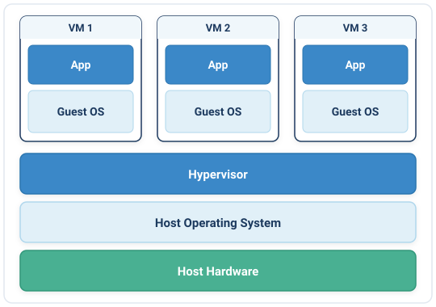
Hardware-Level Virtualization
A Virtual Machine (VM) is an emulation of a physical computer. A hypervisor abstracts physical hardware resources (CPU, RAM, storage, network) to create fully isolated virtual computing environments.
Core Architectural Stack
- Physical Infrastructure: Underlying bare-metal hardware providing compute, memory, storage, and networking capacity.
- Hypervisor (VMM): Manages and abstracts physical hardware, allocating dedicated virtual resources to each VM.
- Dedicated Guest OS: Each VM runs its own independent operating system kernel (Linux or Windows Server) with dedicated binaries and libraries.
- Strong Multi-Tenant Isolation: Hardware-level isolation provides robust security boundaries and fault domain containment.
Fundamental Concept: Containers
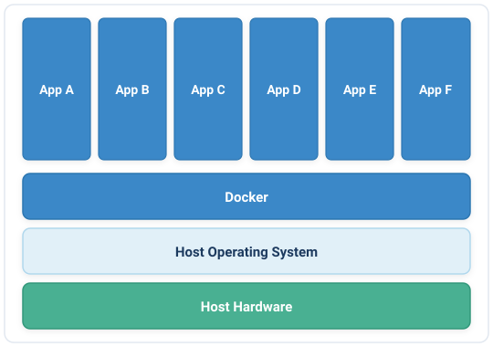
Operating System-Level Virtualization
A Container is a lightweight, standalone execution package that shares the host operating system's kernel, isolating applications through kernel namespaces and control groups (cgroups).
Core Architectural Stack
- Physical Infrastructure: Underlying bare-metal or cloud VM infrastructure hosting the system.
- Shared Host OS Kernel: A single underlying host operating system kernel shared across all running containers.
- Container Engine / Runtime: Manages lifecycle, image layers, and isolation (e.g., Docker, containerd, CRI-O).
- Lightweight & Fast: No guest OS overhead—containers spin up in milliseconds and consume significantly less memory.
Elastic Compute Service (ECS)
Elastic Compute Service (ECS) is a computing service that provides flexible processing capacity in the cloud.
Compared to traditional physical servers, ECS allows you to easily deploy and manage virtual computing resources with superior stability and security. Its elasticity lowers overall IT infrastructure costs, enabling you to focus on your core business instead of maintaining physical servers and facilities.
⚡ Elasticity
Spin up, upgrade, or scale computing instances in minutes based on real-time business demands.
🚀 High Performance
High compute and I/O processing power with ultra-low latency internal interconnects.
🌐 Network Stability
Multi-line BGP connectivity and cross-zone high-speed backbones guarantee reliable access.
🛡️ Enterprise Security
Hardware-level multi-tenant isolation, built-in Anti-DDoS, and granular Security Group rules.
⚙️ Automation
Automate full lifecycle management seamlessly via the Web Console, OpenAPI, CLI, and SDKs.
Global Infrastructure
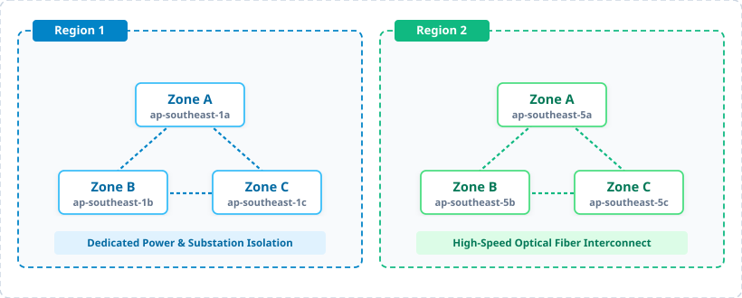
Region (Geographic Boundary)
A physical geographic location worldwide containing multiple datacenters. Selected based on user proximity, data sovereignty, and cost.
Availability Zone (Fault Domain)
An independent datacenter domain with dedicated power, cooling, and network within a region (< 2ms intra-region latency).
Hardware Offloading: From X-Dragon to CIPU
The Virtualization Bottleneck (Traditional IaaS)
Traditional hypervisors run virtualization management, virtual networking switches, and disk storage I/O drivers on host x86 CPU cores:
- CPU Overhead: 8% to 15% of host CPU cycles consumed by hypervisor overhead.
- I/O Jitter: Context switching and resource contention between multiple virtual machines.
- Latency: Software-emulated network and storage stacks introduce latency spikes.
The CIPU Architecture (Cloud Infrastructure Processing Unit)
Alibaba Cloud CIPU is a dedicated hardware processing unit that offloads the entire virtualization layer:
- 0% Host CPU Overhead: Virtualization, storage, and VPC network stacks execute entirely on dedicated CIPU ASIC silicon.
- Hardware Acceleration: Up to 100 Gbps network throughput, sub-microsecond eRDMA latency, and millions of disk IOPS.
- Unified Interface: Standardizes bare-metal and virtual machine operations under a single API framework.
Instance Type
ecs.g8i.2xlarge
| Component | Example Value | Architectural Meaning |
|---|---|---|
| Product Prefix | ecs. |
Identifies the resource as an Elastic Compute Service instance. |
| Instance Family | g (General Purpose) |
Defines workload optimization ratio (g = 1:4 CPU-to-Memory, c = 1:2, r = 1:8). |
| Generation | 8 (8th Generation) |
Hardware platform iteration (equipped with CIPU and latest architecture). |
| Processor Architecture | i (Intel) |
i = Intel Xeon, a = AMD EPYC, y = Alibaba Yitian 710 (ARM), v/gn = GPU. |
| Instance Size | 2xlarge |
Capacity tier indicating 8 vCPUs, 32 GiB memory, bandwidth, and max ENIs. |
Choosing the Right ECS Instance Family
| Instance Category | Ratio (vCPU:RAM) | Flagship Families | Target Production Workloads |
|---|---|---|---|
| General Purpose | 1 : 4 | ecs.g8i (Intel), ecs.g8a (AMD), ecs.g8y (ARM) |
Enterprise applications, web frontend clusters, microservices, mid-tier databases. |
| Compute Optimized | 1 : 2 | ecs.c8i (Intel), ecs.c8a (AMD), ecs.c8y (ARM) |
High-traffic web servers, batch compute clusters, gaming server logic, video encoding. |
| Memory Optimized | 1 : 8 | ecs.r8i (Intel), ecs.r8a (AMD), ecs.r8y, ecs.re6 |
In-memory databases (Redis/Memcached), SAP HANA, large relational DBs, Spark analytics. |
| High Frequency | 1 : 2 or 1 : 4 | ecs.hfc8i, ecs.hfg8i, ecs.hfr8i |
High-frequency trading, EDA semiconductor simulation, sustained high CPU clock (>3.5 GHz). |
| Local NVMe / I/O Intensive | 1 : 4 or 1 : 8 | ecs.i4, ecs.i3, ecs.i3g |
Ultra-low I/O latency, local NVMe SSDs, high IOPS for OLTP, Cassandra, MongoDB, Elasticsearch. |
| Big Data / High Throughput | Varied + SATA HDD | ecs.d3s, ecs.d3c, ecs.d2s |
Massive storage capacity with local SATA HDDs, Hadoop/HDFS clusters, Kafka, data lake pipelines. |
| Network Enhanced | 1 : 2 or 1 : 4 | ecs.g8ne, ecs.c8ne, ecs.r8ne |
High-throughput network packet processing (extreme PPS), VoIP gateways, network firewalls. |
| Burstable & Universal | Shared / 1 : 4 | ecs.u1 (Universal), ecs.e (Economy), ecs.t6 |
Lightweight web testing, personal blogs, low-cost staging, burstable CPU credit workloads. |
YiTian ARM-Based Instances
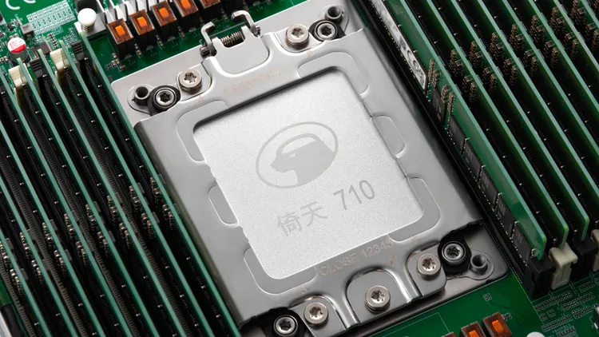
- Cores & Clock: 128 custom Armv9 physical cores @ 2.75 GHz (turbo up to 3.2 GHz; ~60B transistors).
- Cache Hierarchy: 128 MB system-level L3 cache + private L2 cache per core.
- Memory Channels: 8-channel DDR5-4800 (up to 4 TB RAM, ~307 GB/s bandwidth).
- Interconnect & I/O: 96 PCIe Gen 5.0 lanes; dual-socket coherent interconnect.
- Hardware Acceleration: On-chip gzip data compression & AES/SM4 hardware crypto engines.
- Integer Benchmark: SPEC CPU 2017 Integer rate > 440.
Key Architectural Strengths
- 20%~30% Price-Performance: Delivers superior throughput-per-dollar compared to legacy x86 CPUs for cloud and enterprise workloads.
- Dedicated Physical Cores: Pure single-threaded physical core execution without SMT (hyper-threading), eliminating noisy neighbors and CPU cache jitter.
- Hardware-Offloaded Compression: On-chip acceleration for gzip data compression and cryptographic hashing (AES/SM4), saving host CPU cycles.
Use Cases
- Cloud-Native & Containerized Workloads: Exceptional performance and energy efficiency for ACK/Kubernetes microservices, web servers, and video transcoding.
- ECS Instance Families: Powers general-purpose (
ecs.g8y), compute-optimized (ecs.c8y), and memory-optimized (ecs.r8y) instances. - High-Concurrency Distributed Systems: Highly efficient execution of complex distributed queries, cache layers, and transactional systems at lower power draw.
ECS Bare Metal Instances
1. Re-Virtualization (Nested Virtualization)
Deploy VMware ESXi, OpenStack, or KVM directly on cloud infrastructure without hypervisor nesting penalties.
2. Licensing & Physical Isolation
Fulfill requirements for software requiring physical CPU socket binding (Oracle RAC, SAP) and regulatory compliance.
3. Chip-Level Confidential Computing (Intel SGX)
Enclave memory is hardware-encrypted, blocking OS, hypervisor, and cloud admins from inspecting sensitive in-use memory data.
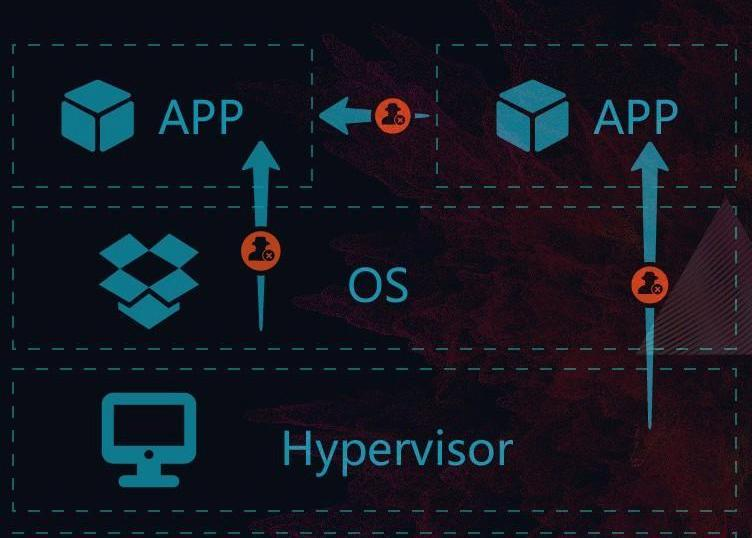
Choosing the Right ECS Instance Family (cont.)
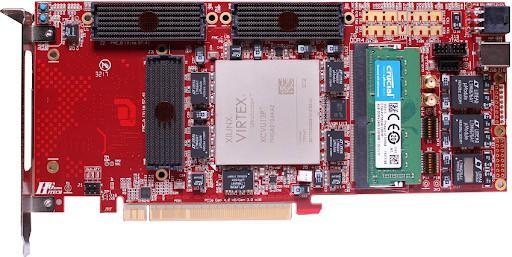
| Instance Category | Chip | Flagship Families | Target Production Workloads |
|---|---|---|---|
| Lightweight GPU Compute | NVIDIA T4 / A10 (vGPU Slicing) | ecs.vgn7i, ecs.vgn6i |
Cloud gaming, cloud workstations (VDI), real-time online 3D rendering, AR/VR, video decoding. |
| AI Inference & Analytics | NVIDIA A10 / T4 Tensor Core | ecs.gn7i, ecs.gn6i |
Deep learning inference, computer vision (CV), speech recognition, real-time video analytics, NLP. |
| Deep Learning Training | NVIDIA A100 / V100 (NVLink) | ecs.gn7e, ecs.gn6e, ecs.gn6v |
Large-scale neural network model training, generative AI, LLM fine-tuning, scientific simulation. |
| Supercomputing & Bare Metal | NVIDIA A100 / H800 + eRDMA | ecs.ebmgn7e, ecs.sccgn7ex |
Distributed AI foundation model training clusters, multi-node RoCE/InfiniBand, zero virtualization tax. |
| FPGA Hardware Acceleration | Xilinx Virtex UltraScale+ FPGA | ecs.f3, ecs.f1 |
Real-time video transcoding (JPEG to WebP/AV1), genomics DNA sequencing, computational finance. |
Heterogeneous Computing
GPU Accelerated Families
- AI Training & LLM:
ecs.ebmgn8v/ecs.gn7ewith high-bandwidth memory for foundation models. - AI Inference:
ecs.gn7i(NVIDIA A10) and L-series for cost-effective deep learning inference. - Graphics / VDI:
ecs.vgn6ilightweight virtual GPU sharing for CAD and 3D modeling.
Supercomputing Clusters (SCC) with eRDMA
- RoCE v2 eRDMA: Remote Direct Memory Access bypasses OS kernel overhead, achieving sub-microsecond latency.
- Scale-out HPC: Prevents network bottlenecks across distributed multi-node parallel computing.
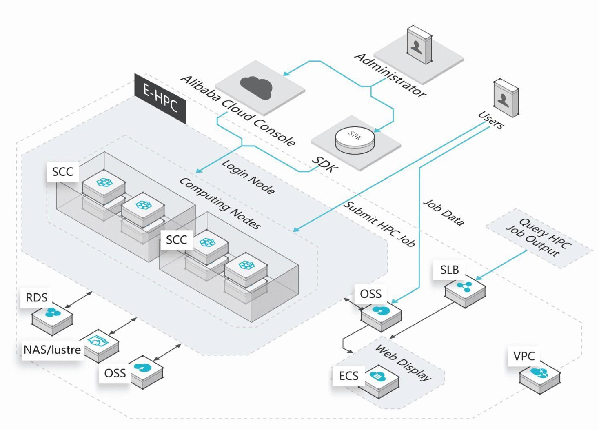
Instance Metadata
Instance metadata provides internal access to runtime configuration attributes from within the running ECS instance without calling external APIs:
- Instance Identity: Query instance ID, image ID, region, Availability Zone, private IP, and hostname.
- Network Topology: Query VPC ID, vSwitch ID, CIDR blocks, and gateway settings.
- Zero-Credential Access: Retrieve temporary STS security tokens attached to an ECS RAM Role, eliminating the hazard of hardcoding AccessKey secrets in application code!
Recommended Best Practice: Token-Based Retrieval
Always use session tokens for secure metadata access:
# Step 1: Request a secure session token (TTL: 6 hours)
TOKEN=$(curl -s -X PUT "http://100.100.100.200/latest/api/token" \
-H "X-aliyun-ecs-metadata-token-ttl-seconds: 21600")
# Step 2: Query metadata using the token header
curl -s -H "X-aliyun-ecs-metadata-token: $TOKEN" \
http://100.100.100.200/latest/meta-data/instance-id
# Step 3: Retrieve temporary STS credentials from RAM Role
curl -s -H "X-aliyun-ecs-metadata-token: $TOKEN" \
http://100.100.100.200/latest/meta-data/ram/security-credentials/<RoleName>
Bootstrapping with ECS User Data
User Data enables custom bootstrapping scripts passed to an instance during provisioning:
- Executed automatically by Cloud-init upon the initial boot of the instance.
- Runs with administrative root / Administrator privileges.
- Queried via metadata at
http://100.100.100.200/latest/user-data. - Essential for Auto Scaling: automatically joins new instances into a cluster, configures web servers, or registers to monitoring tools without baking static images.
Platform Script Formats
| Operating System | Required Script Header | Privilege |
|---|---|---|
| Linux | Starts with #!/bin/sh or Cloud-Config YAML |
Root privileges |
| Windows (PowerShell) | Starts with [powershell] tag |
Administrator |
| Windows (Batch) | Starts with [bat] tag |
Administrator |
#!/bin/sh
# Example: Automated Webserver Bootstrapping
yum update -y
yum install -y nginx
systemctl enable --now nginx
Cloud Disk
| Cloud Disk Category | Capacity Range | Max IOPS | Max Throughput | Architectural Best Fit |
|---|---|---|---|---|
ESSD AutoPLcloud_auto |
1 GiB to 65,536 GiB | Up to 1,000,000 (via dynamic burst) |
Up to 4,000 MB/s (via dynamic burst) |
Workloads with fluctuating traffic spikes, e-commerce sales, core databases. Decouples IOPS from disk size! |
Standard ESSD (PL3)cloud_essd |
1,261 to 32,768 GiB | 1,000,000 | 4,000 MB/s | Ultra-high performance enterprise databases (Oracle, SAP HANA, PolarDB), heavy I/O analytics. |
Standard ESSD (PL1/PL2)cloud_essd |
20 to 32,768 GiB | 50,000 – 100,000 | 350 – 750 MB/s | Medium to large relational databases (MySQL/PostgreSQL), high-traffic enterprise application backends. |
ESSD Entrycloud_essd_entry |
10 to 32,768 GiB | 6,000 | 150 MB/s | Entry-tier enterprise SSD for lightweight instances (u1, e), dev/test environments, small web apps. |
Ultra Diskcloud_efficiency |
20 to 32,768 GiB | 5,000 | 140 MB/s | Secondary non-I/O intensive disks, cold data repositories, archive filesystems. |
Legacy Standard SSD (
cloud_ssd) has been phased out for new instance generations in favor of ESSD Entry and ESSD AutoPL.
Apsara Pangu Distributed File System
ECS Cloud Disks do not reside on physical server drives inside compute hosts. They are powered by Pangu, Alibaba Cloud's distributed storage architecture:
- Triplicate Data Replication: Every chunk of data written to a cloud disk is synchronously committed across 3 independent copies.
- Rack & Switch Isolation: Replicas are distributed across separate physical server racks and network switches within the same Availability Zone.
- Data Reliability: Delivers an industry-leading 99.9999999% (9 nines) data durability guarantee.
- Zero Local RAID Dependency: Eliminates the operational hazard and rebuilding overhead of physical RAID arrays.
- Multi-Service Foundation: Powers BlockFS (Block Storage Cloud Disks), LogFile (Databases & TableStore), and HDFS (Big Data computing).
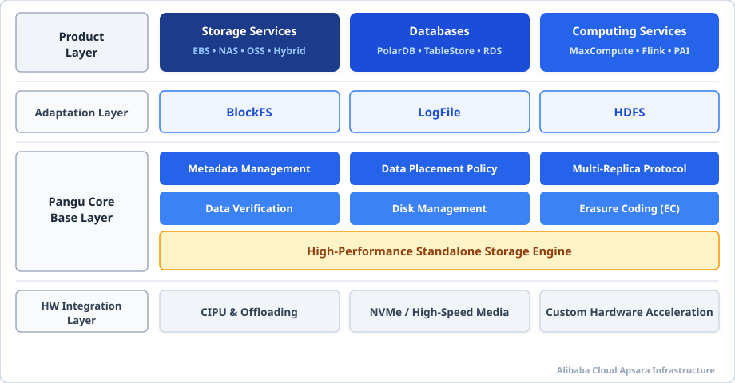
Cloud Disk Attachment
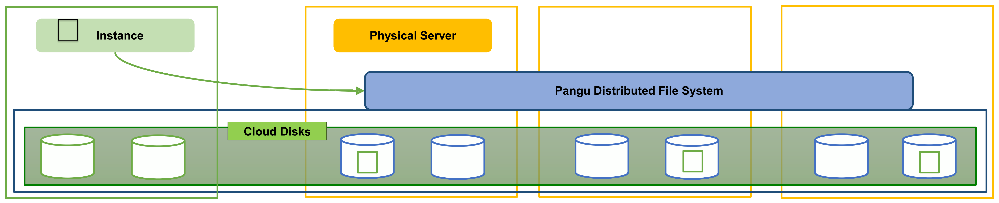
Same-Zone Scope
Cloud disks can only attach to ECS instances within the same Availability Zone. Cross-zone attachment is not supported.
Attachment Quota & Multi-Mount
An instance attaches 1 system disk and up to 16 data disks. By default disks mount to one instance at a time (select ESSD support NVMe multi-attach).
Hot-Plug Lifecycle
Data disks support dynamic hot-plugging (attach and detach while the instance is running) without requiring an OS restart.
Instance Failover
ECS instances run on physical host machines called Node Controllers (NC). When a physical hardware failure occurs:
- Physical Host Failure (NC1 Down): Hardware malfunction, power disruption, or CPU/motherboard failure causes NC1 to stop operating.
- Autonomic Detection: The cloud hypervisor cluster management plane monitors continuous node heartbeats and promptly detects host unavailability.
- Automated Re-Instantiation: The instance (
i-001) automatically migrates and boots on a healthy physical host (NC2) within the same Availability Zone. - Data Preservation via Decoupled Storage: Because system and data disks reside on network-attached Cloud Disks (Pangu), no data is lost—NC2 immediately reconnects to the existing storage disks.
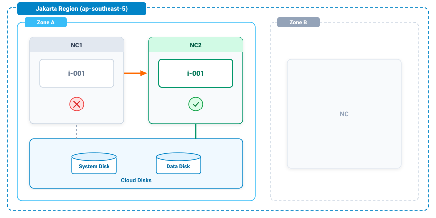
Resize a Cloud Disk
Step 1: Increase Disk Capacity
Specify target capacity in ECS Console or via ResizeDisk API. Resizing is performed online and is strictly expansion-only.
Step 2: Extend Partitions
If partitioned, extend the partition boundary using growpart /dev/vdb 1 on Linux or Disk Management on Windows.
Step 3: Extend File Systems
Expand the filesystem live without unmounting: run resize2fs /dev/vdb1 (ext4) or xfs_growfs /mnt/data (XFS).
ECS Disk Snapshots
How Snapshots Work
An ECS snapshot is a point-in-time copy of a cloud disk stored redundantly in Object Storage Service (OSS):
- Crash Consistency: Captures exact disk data at creation time.
- Cross-Zone Usability: Snapshots are regional resources. A snapshot created in Zone A can be used to create a new disk or custom image in Zone B!
The Incremental Block Mechanism
To optimize storage capacity and minimize costs, snapshots copy only modified blocks:
- Snapshot 1: Full copy of all written blocks on the disk at time T1.
- Snapshot 2: Copies only blocks modified or added between T1 and T2.
- Snapshot 3: Copies only blocks changed between T2 and T3.
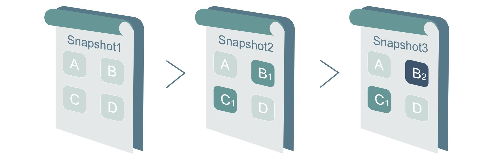
Cloud Disk Migration Workflow
1. Same-Zone Migration (Direct Detach & Attach)
When migrating an existing cloud disk from Instance A to Instance B within the same Availability Zone:
- Unmount in OS: Flush file buffers and unmount the filesystem inside Instance A (e.g.
umount /mnt/data). - Detach Disk: Detach the disk from Instance A via the ECS Console, CLI, or OpenAPI.
- Attach to Target: Attach the decoupled cloud disk to Instance B.
- Mount in Target OS: Mount the block device inside Instance B (e.g.
mount /dev/vdb1 /mnt/data).
2. Cross-Zone Migration (Snapshot-Based Replication)
Since cloud disks cannot be attached across different Availability Zones directly:
- Create Snapshot: Take a snapshot of the cloud disk in Zone A. (Snapshots are regional assets stored in OSS).
- Create Disk in Zone B: Provision a brand-new cloud disk directly in Zone B using the snapshot as the source.
- Attach to Target Instance: Attach and mount the newly created disk to Instance B in Zone B.
- Verify & Rebind: Verify data consistency and update application connection endpoints.
ECS Images
Public Images
Maintained directly by Alibaba Cloud with official patches and security kernels:
- Alibaba Cloud Linux 3 (Optimized for ECS & CIPU)
- Ubuntu, Debian, CentOS
- Windows Server 2022/2025
Custom Images
Created by users from system disk snapshots of configured instances:
- Pre-install runtimes, security agents, and proprietary code.
- Essential foundation for Auto Scaling Groups to launch identical instances.
Marketplace Images
Pre-packaged third-party enterprise software stacks:
- WordPress, LAMP/LNMP stacks.
- Commercial platforms (SAP, Fortinet Firewall, F5).
- Billed as software fees + ECS compute infrastructure.
Shared / Community
Cross-account image distribution:
- Share custom images securely with other Alibaba Cloud accounts.
- Replicate custom images across regions to facilitate global multi-region deployments.
Benefits of Marketplace Images
| Traditional OS Deployment | Marketplace / Custom Image |
|---|---|
|
✓ Zero configuration downtime
✓ Vendor-tested compatibility |
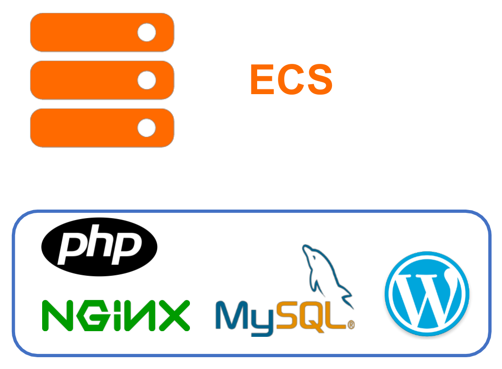
Basic Network
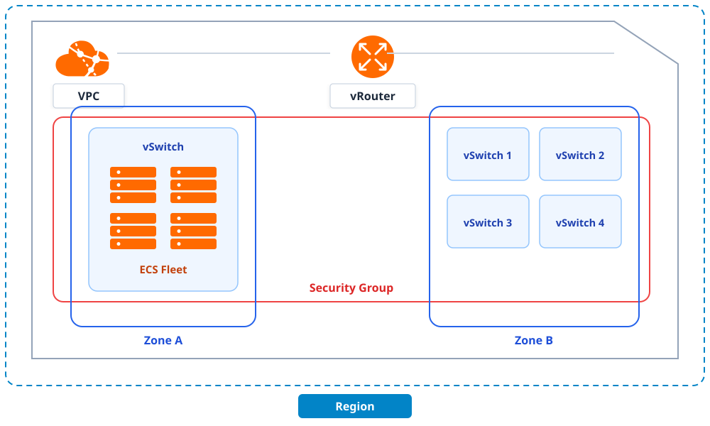
Virtual Private Cloud (VPC)
- VPC (Regional Boundary): Logically isolated virtual network on Alibaba Cloud. Defines private IPv4 CIDR blocks (
10.0.0.0/8,172.16.0.0/12,192.168.0.0/16) and IPv6 address ranges. - vSwitch (Virtual Switch): Subdivides the VPC CIDR block into a zone-anchored virtual switch, residing strictly inside a single Availability Zone. Each ECS instance connects to a specific vSwitch.
- VRouter & Route Tables: Automatically manages traffic forwarding within the VPC, across vSwitches, and through gateways (Internet NAT, VPN, CEN).
- VPC Isolation: Provides enterprise tenant isolation with software-defined security, complete IP address autonomy, and high-performance SDN fabric.
Elastic Network Interfaces (ENI)
Types of ENIs
- Primary ENI (
eth0): Created automatically during instance launch. Bound to the primary private IP address in the instance's vSwitch and cannot be detached. - Secondary ENI: Created independently and can be dynamically attached or detached from instances within the same Availability Zone.
- Trunking ENI: High-density virtual interface architecture enabling container orchestration (ACK) to bind multiple pod interfaces to a single physical ENI.
- Attachment Quotas: Maximum number of ENIs and private IPs is determined by the instance type specification.
Key Enterprise Use Cases
- Low-Cost Active/Standby Failover: When a primary gateway fails, the secondary ENI carrying private service IPs detaches and attaches immediately to a standby host.
- Multi-vSwitch Multi-Homing: An ECS instance connects simultaneously to different vSwitches (e.g. management traffic on vSwitch-Mgmt, application traffic on vSwitch-App).
- High-Density Kubernetes Networking: Terway CNI plugin utilizes secondary ENIs and secondary IP addresses for native pod-to-pod routing.
- Same-Zone Boundary: All attached secondary ENIs must reside in the exact same Availability Zone as the host ECS instance.
Elastic IP Address
An Elastic IP Address (EIP) is an independent static public IPv4 resource allocated in a specific region, decoupled from compute instance lifecycles:
- Independent Lifecycle: Allocated, billed, and retained separately from ECS instances. Detaching an EIP preserves the public IP address permanently in your account.
- Dynamic Binding: Bind and unbind on-the-fly to ECS instances, secondary ENIs, internal SLB instances, or NAT Gateways with zero downtime.
- High Availability Failover: Quickly rebind the public IP address from a malfunctioning instance to a healthy standby instance during maintenance or disaster recovery.
- Multi-Line BGP Quality: Backed by Alibaba Cloud multi-line BGP network, delivering carrier-grade Internet transit and minimal latency worldwide.
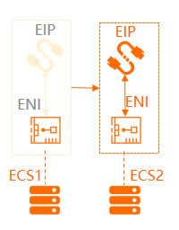
Internet Connectivity
Elastic IP (EIP)
Independent static public IPv4 address decoupled from compute instances:
- Dynamic Binding: Bind/unbind to ECS, ENI, internal SLB, or NAT Gateway without service interruption.
- Multi-line BGP: Backed by Alibaba Cloud multi-line BGP for ultra-low latency worldwide.
- Cost Model: Billed by traffic or bandwidth independent of ECS.
Internet NAT Gateway
High-availability managed gateway deployed at the VPC boundary:
- SNAT (Source NAT): Allows hundreds of private ECS instances without public IPs to securely access the Internet (e.g. software updates).
- DNAT (Destination NAT): Port forwarding to expose internal private ECS services to the Internet.
Server Load Balancer (SLB)
Distribute incoming application traffic across ECS fleets:
- ALB (Application Load Balancer): Layer 7 HTTP/HTTPS traffic management with URL routing.
- NLB (Network Load Balancer): Layer 4 TCP/UDP load balancing handling 100M+ concurrent connections with ultra-low latency.
| Comparison Aspect | Elastic IP (EIP) | ECS Standard Public IP |
|---|---|---|
| Decoupled Lifecycle | Yes (Can detach from Instance 1 and reattach to Instance 2). | No (Permanently bound to the ECS instance; released on termination). |
| Supported Targets | ECS instance, Secondary ENI, Internal SLB, NAT Gateway. | Primary ENI of the specific ECS instance only. |
| Bandwidth Management | Supports Internet Shared Bandwidth packages across multiple EIPs. | Dedicated instance bandwidth only. |
Security Groups
A Security Group functions as a software-defined, distributed stateful firewall operating at the Elastic Network Interface (ENI) layer to filter inbound and outbound traffic.
- Stateful Inspection: If an inbound packet is allowed by an inbound rule, response traffic is automatically permitted outbound (and vice versa) regardless of outbound rules.
- Regional Scope within VPC: Security Groups are regional constructs in a VPC and can protect ECS instances across multiple Availability Zones in the same VPC.
- ENI & Multi-Group Association: Each ENI must belong to at least one Security Group and can join multiple Security Groups simultaneously.
- Default Isolation Boundary: Instances associated with different Security Groups are completely isolated by default with zero inter-group network communication.
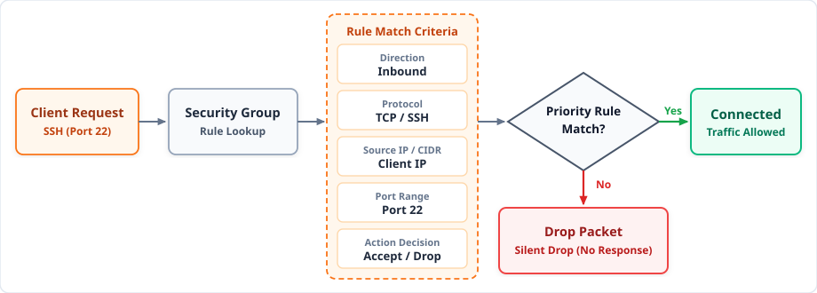
Security Group (cont.)
Security Group rules define granular network packet filtering policies. Traffic is evaluated based on specific rule parameters and authorized target objects:
- Rule Parameters:
Action: Accept (permit packet) or Drop (silently discard).Protocol: Transport protocol (TCP, UDP, ICMP, GRE, or ALL).Port Range: Target port boundary (e.g.,80/80,443/443,22/22, or0/65535).Priority: Evaluation order from 1 (highest) to 100 (lowest).
- Authorization Objects:
- CIDR IP Blocks: Authorizes specific IP ranges (e.g.,
100.100.0.0/16or0.0.0.0/0). - Security Group ID: Authorizes another Security Group (e.g.,
sg-002), granting mutual network trust to all member instances dynamically.
- CIDR IP Blocks: Authorizes specific IP ranges (e.g.,
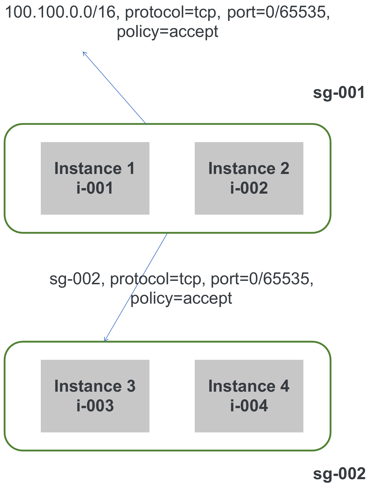
ECS High Availability & Automated Failover
Service Level Agreement (SLA) Targets
| Deployment Architecture | Monthly Uptime SLA | Service Guarantee |
|---|---|---|
| Single ECS Instance | 99.975% | Covers hardware, hypervisor, and network failures. |
| Multi-Zone Deployment | 99.995% | Across multiple Availability Zones in the same region with SLB. |
Intra-zone NC failover automatically migrates an instance to a healthy physical machine in the same zone if hardware fails.
The Shared Responsibility Model in Cloud Computing
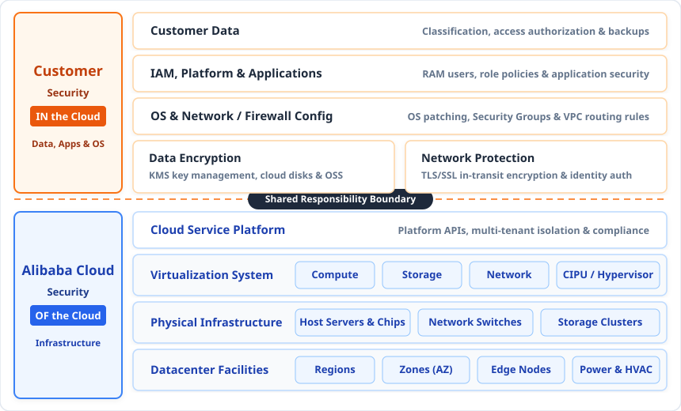
Security IN the Cloud (Customer)
- Customer Data: Data protection, backups, and encryption at-rest/in-transit.
- OS & Applications: OS patching, software runtimes, and application security.
- Access & Network: RAM Users, access credentials, and Security Group firewall rules.
Security OF the Cloud (Alibaba Cloud)
- Physical Facilities: Datacenter security, power, and environmental cooling.
- Hardware Infrastructure: Physical servers, storage arrays, switches, and CIPU hypervisors.
- Global Network: Regions, Availability Zones, and global fiber backbone.
Connecting to ECS
Traditional operating system remote management relies on direct network connectivity and client software:
- Linux (SSH - Port 22): Connect via OpenSSH, PuTTY, or terminal. Authenticate using SSH Key Pairs (recommended for production: 2048-bit RSA or ED25519) or root/user passwords.
- Windows (RDP - Port 3389): Connect via Remote Desktop Protocol (MSTSC) using Administrator credentials with encrypted TLS sessions.
- Network Prerequisites:
- Instance must possess a Public IP / Elastic IP (EIP), or private reachability via VPN Gateway / CEN / Bastion host.
- Security Group must permit inbound traffic on port
22(Linux) or3389(Windows).
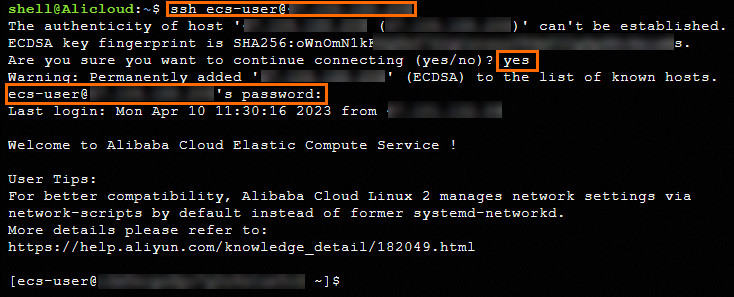
0.0.0.0/0 on the public internet. Restrict inbound CIDRs to corporate IP ranges, or adopt cloud-native agent-based access to eliminate open inbound ports entirely.
Alibaba Cloud Workbench
A zero-installation, browser-based management tool to manage and access ECS:
- Clientless Operation: Open full-featured web SSH terminal (Linux) or web RDP GUI (Windows) directly in any modern browser without installing local client tools.
- Preventing Key Leakage: Authenticate seamlessly using RAM authorization. Workbench automatically generates temporary 60-second SSH key pairs, injects the public key to the instance, and establishes connection.
- Integrated SFTP File Manager: Dual-pane visual file browser allowing drag-and-drop file upload/download between local computer and ECS.
- Auditing & Governance: Centralized session recording, command audit logs, and granular Resource Access Management (RAM) permission control.
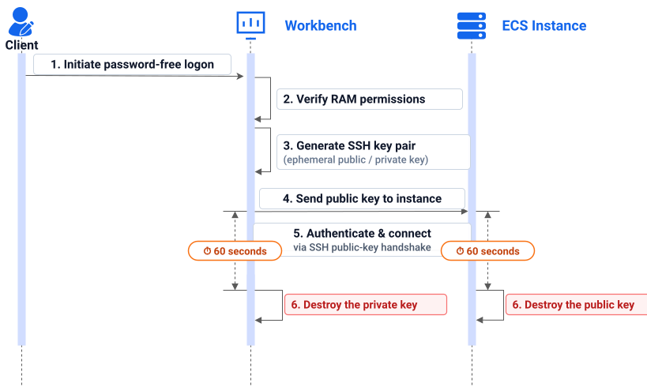
VNC Management Terminal
Hardware-level virtual display and keyboard stream powered directly by the CIPU / KVM hypervisor:
- Out-of-Band Architectural Bypass: Completely independent of the guest operating system's network stack, IP address, or Security Groups!
- Emergency Troubleshooting Lifeline: Essential when standard network access is unavailable:
- Kernel panics, bootloader (GRUB) failures, and Windows Blue Screens (BSOD).
- Host firewall lockouts (e.g., accidental
iptables -P INPUT DROPor Windows Firewall rule errors). - Corrupted network interface configuration, DNS failure, or damaged SSH daemon config.
- Interactive Boot-Stage Control: Allows entering single-user recovery mode, inspecting BIOS settings, or running disk file system checks (
fsck).
VNC vs Standard SSH / RDP
| Capability | Standard SSH / RDP | VNC Management Terminal |
|---|---|---|
| Network Path | Guest OS TCP/IP stack | Out-of-Band (Hypervisor) |
| Security Group | Requires Port 22 / 3389 open | Bypasses SG completely |
| Public IP / EIP | Required (or VPN/Bastion) | No IP address needed |
| OS State | OS must be fully running | Works during boot, BIOS & crash |
| Primary Purpose | Daily administrative tasks | Emergency recovery & repair |
Cloud Assistant
- No Open Inbound Ports (22/3389): Agent initiates outbound HTTPS (TCP 443) long-polling to the Cloud Assistant endpoint.
- No Public IP Needed: Operates entirely through private VPC network routes without requiring Elastic IP or NAT Gateway.
- Multi-OS Native Support: Pre-installed on Linux (Alibaba Cloud Linux, Ubuntu, CentOS) and Windows Server images.
- Concurrent Fleet Dispatch: Execute Shell, PowerShell, Batch, or Python simultaneously across thousands of instances.
- Automated O&M & Cron: Supports one-time executions, recurring cron-like tasks, and integration with OOS.
- Audited & Compliant: Every command execution and output status is tracked and audited in ActionTrail.
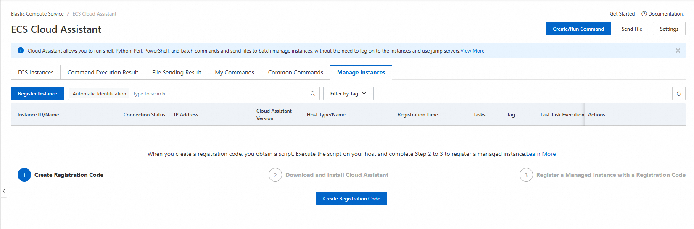
Session Manager
Interactive command-line service running directly on top of Cloud Assistant—inheriting all Cloud Assistant capabilities without redundant overhead:
- Inherited Cloud Assistant Strengths: Requires no open inbound ports 22/3389, no public IP, and no bastion hosts, operating securely over outbound agent channels.
- One-Click Interactive Shell: Open full-featured terminal sessions (Linux Bash or Windows PowerShell) via the Web Console or local CLI (
aliyun ecs StartTerminalSession). - Granular RAM Authorization: Enforce strict RBAC access policies scoped to specific instances, resource groups, or tags without exposing OS root credentials.
- Complete Session Archival & Audit: Real-time streaming and archival of every keystroke and command output to OSS or Log Service (SLS), with full activity auditing in ActionTrail.
- Session Inactivity Controls: Automatic termination of idle sessions and instant administrative revocation of active connections.
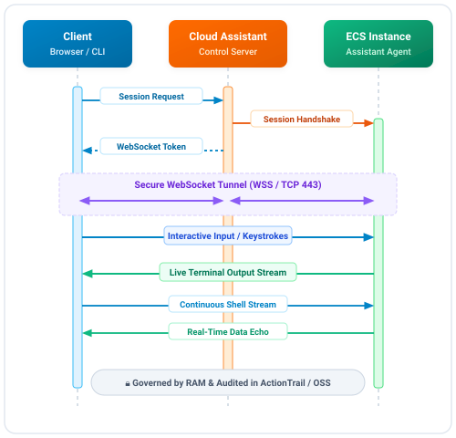
How to Run Container Application
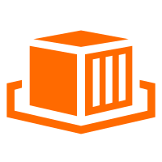
Elastic Container Instance (ECI)
Serverless Container RuntimeRun containers directly in seconds without provisioning, configuring, or managing underlying ECS virtual servers.
- Zero Server Management: No OS maintenance, patching, or node capacity planning.
- Instant Elasticity: Spin up container pods in seconds to handle rapid traffic surges.
- Per-Second Billing: Pay strictly for the CPU and memory consumed during container execution.
- Best For: Batch data processing, CI/CD pipelines, and periodic background jobs.
Container Service for Kubernetes (ACK)
Enterprise Kubernetes PlatformEnterprise-grade managed Kubernetes service providing comprehensive container orchestration and lifecycle management.
- Full Orchestration: Automated deployment, scaling, and service discovery for microservices.
- Flexible Node Pool: Run worker nodes on dedicated ECS instances or offload burst pods to serverless ECI.
- Deep Cloud Integration: Native connectivity with VPC networking, SLB load balancers, and Cloud Disks.
- Best For: Complex enterprise microservices, stateful databases, and 24/7 web applications.
Container Service for Kubernetes (ACK) Architecture
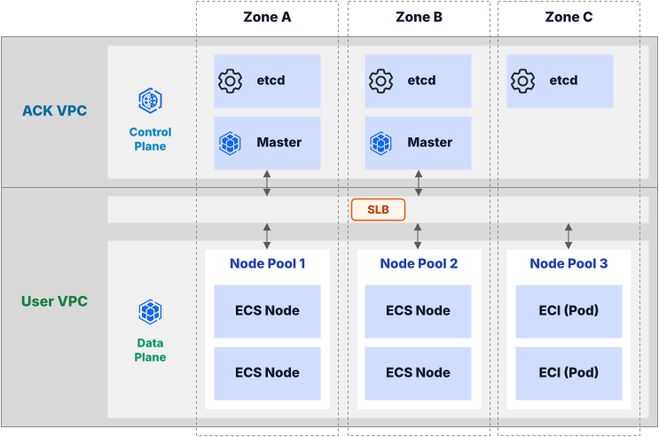
Pay-As-You-Go (PAYG)
Core Mechanics
- Second-Level Metering: Instances are billed by the second based on active CPU, memory, and bandwidth.
- Zero Upfront Commitment: Launch, scale, resize, or delete instances at any time without contractual penalties.
- No-charge When Stopped (Economical Mode): When a standard VPC instance is stopped, computing (vCPU/RAM) charges cease immediately. Only retained cloud disks and elastic IPs incur standard storage costs.
Use Cases
- Development, Testing & Staging: Environments run during business hours (e.g., 9 AM to 6 PM) and shut down overnight/weekends, saving over 70% in monthly costs.
- Unpredictable Traffic Spikes: Dynamic burst fleets launched by Auto Scaling during unexpected flash events.
- Short-Term Data Jobs: Temporary batch ETL tasks, ad-hoc data crunching, and short-lived build runners.
- Proof-of-Concept (PoC): Experimenting with new operating systems or architecture topologies before permanent rollout.
Subscription
Core Mechanics
- Prepaid Commitment: Purchase instances for predefined terms (1 month up to 5 years).
- Deep Price Discounts: Subscriptions provide significant cost reductions—up to 70% to 85% cheaper than running equivalent PAYG instances 24/7.
- Lifecycle Flexibility: Supports scheduled auto-renewal, configuration upgrades during the term, and subscription-to-PAYG conversions if workloads transition.
Use Cases
- Core Production Workloads: Steady-state enterprise applications that operate continuously 24 hours a day, 365 days a year.
- Primary Database Clusters: Production relational databases (MySQL, PostgreSQL, Oracle RAC) and enterprise message brokers.
- Predictable Multi-Year Roadmaps: Workloads with stable budgets and guaranteed capacity requirements across financial fiscal years.
Preemptible Instances (Spot Instances)
Core Mechanics
- Steep Discounts (Up to 90% Off): Utilize spare datacenter capacity at bid-based pricing significantly below standard Pay-As-You-Go rates.
- Dynamic Bidding: Market price fluctuates based on real-time regional supply and demand. Set a maximum hourly bid threshold or accept the spot market rate.
- 1-Hour Protection Period: Newly created spot instances are guaranteed not to be reclaimed during their first hour of operation.
- 5-Minute Reclaim Notice: If market price exceeds your bid or capacity is reclaimed, Alibaba Cloud issues a 5-minute advance notification before termination.
Use Cases
- Stateless Batch Processing: Distributed MapReduce / Hadoop worker nodes, genomics processing, and scientific calculations.
- Asynchronous Media Rendering: Video encoding, image transcoding, 3D graphics rendering pipelines with checkpointing.
- Distributed Load Testing & CI/CD: High-concurrency automated test runners and build agents that can cleanly re-queue tasks if interrupted.
Reserved Instances (RI)
Core Mechanics
- Billing Coupon: Reserved Instances do not launch a physical virtual machine. Instead, they act as an accounting discount coupon that automatically matches eligible PAYG instances.
- Term & Payment Options: Available in 1-year or 3-year commitments with All Upfront, Partial Upfront, or No Upfront payment models.
- Zonal vs Regional Scope:
- Regional RI: Applies discount to matched instance types across any Availability Zone in that region.
- Zonal RI: Applies discount to a specific Zone and guarantees physical compute capacity reservation in that datacenter.
- Splitting & Merging: Flexibility to split (e.g. 1x
4xlargeinto 2x2xlarge) or merge instance sizes within the exact same instance family.
Use Cases
- Dynamic Fleets with Constant Footprint: Workloads where instances are frequently recreated, refreshed, or auto-scaled, but aggregate vCPU/RAM under a specific family remains consistent.
- Capacity Guarantee for Critical Events: Utilizing Zonal RIs before major marketing campaigns to ensure compute capacity cannot be exhausted by other tenants in that specific zone.
Savings Plans
General-Purpose Savings Plan
Maximum architectural flexibility with zero family or regional lock-in:
- Cross-Family Flexibility: Automatically applies across different instance families (e.g.,
g8i,c8i,r8i,g8y) and generations. - Cross-Region Flexibility: Applies discounts across different geographic regions worldwide within the same account.
- Serverless Container Support: Automatically covers both ECS virtual machines and Elastic Container Instance (ECI) pods.
- Operating System Agnostic: Seamlessly applies to both Linux and Windows workloads.
ECS Compute Savings Plan
Optimized for focused deployments with higher discount rates:
- Targeted Commitment: Tied to a specific instance family within a designated region (e.g.,
g8iin Singapore). - Higher Savings: Delivers deeper discount percentages compared to General-Purpose plans.
- Size Agnostic: Automatically covers any instance size within that designated family (e.g.,
large,2xlarge,4xlarge).
Architect Best Practice: Sizing Savings Plans
Analyze your historical 24/7 steady-state compute expenditure. Commit to 70% to 80% of your baseline hourly spend using Savings Plans to guarantee maximum discount utilization, while allowing dynamic peak traffic surges to float on Pay-As-You-Go.
- A Directly detach the ESSD disk from the failed Zone A instance and attach it to the Zone B instance via the ECS Console.
- B Restore the database from the latest disk snapshot by creating a new ESSD disk in Singapore Zone B, then attach and mount it to the Zone B instance.
- C Trigger an automatic NC live migration across zones using the Alibaba Cloud CLI.
- D Reconfigure the Zone A vSwitch CIDR block to span into Zone B and rebind the existing private IP address.
- A Continuously attach a 32 TB Standard ESSD PL3 disk to ensure 100,000 IOPS availability 24/7.
- B Provision multiple Ultra Disks configured in a software RAID 0 array inside the guest OS.
-
C
Provision an ESSD AutoPL (
cloud_auto) disk with Performance Bursting enabled, scaling IOPS automatically during surges. -
D
Attach a legacy Standard SSD (
cloud_ssd) and configure hourly auto-expansion scripts via OpenAPI.
cloud_auto) with Performance Bursting.
- A Connect via a standard SSH client after binding a temporary Elastic IP and opening inbound Port 22 at Priority 100.
- B Use the VNC Management Terminal for daily multi-user command auditing and automatic OSS keystroke streaming.
- C Migrate the ECS instances from VPC to Basic Network so administrators can connect without Security Group rules.
- D Use Session Manager (built on Cloud Assistant) to establish interactive shell sessions over outbound HTTPS with RAM authorization and OSS/ActionTrail auditing.
Module 02: Elastic Compute Service (ECS)
Module 03: Virtual Private Cloud (VPC)